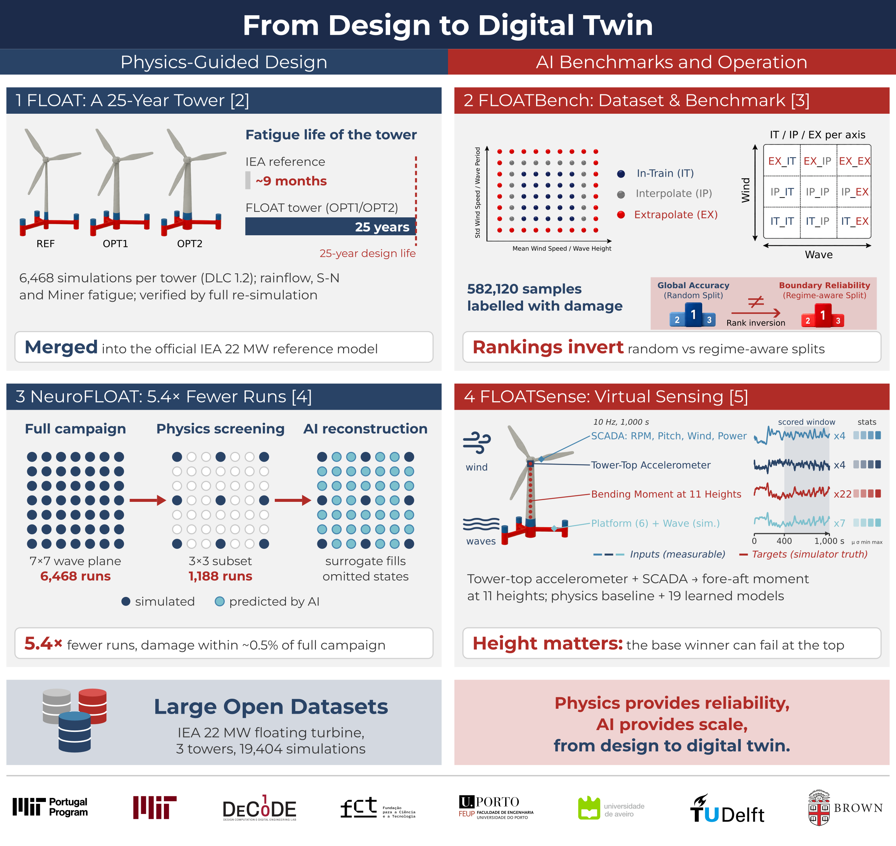
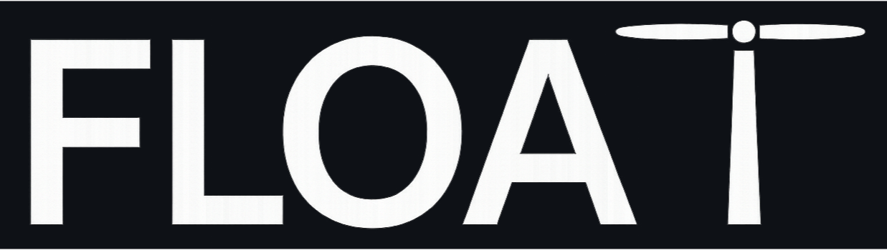
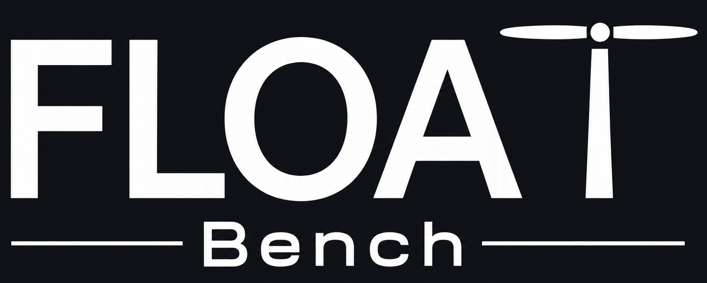
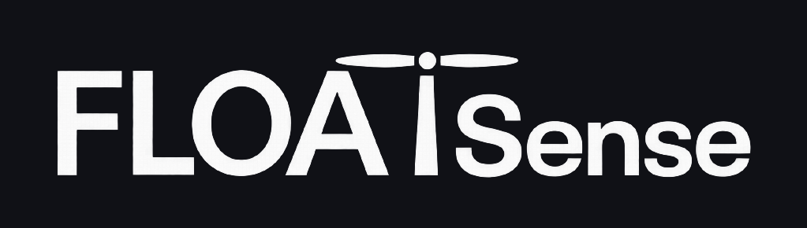
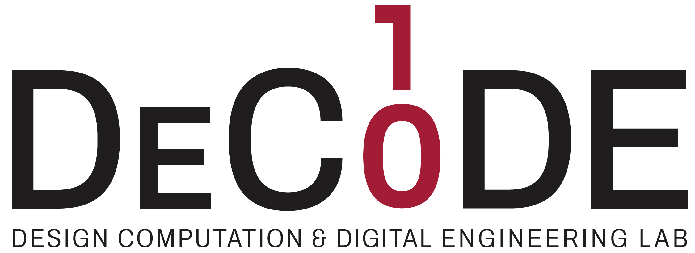

Before installation, a faster design loop: designers and certifiers evaluate new tower concepts with far fewer simulations.
After installation, tower loads estimated from nacelle sensors, validated in simulation; field validation is the next step.
FLOAT · FLOATBench · NeuroFLOAT · FLOATSense
The same structural physics governs design, simulation, learning and monitoring.

9 mo → 25 yr
fatigue life of the IEA 22 MW floating tower after the FLOAT redesign
Merged
into the official IEA 22 MW reference model (NREL and DTU)
5.4×
fewer simulations per new tower (6,468 → 1,188), damage within ~0.5%
582,120
labelled samples in an open benchmark for AI generalisation
11 heights
of tower bending moment estimated from nacelle sensors
1 design → 2 benchmark → 3 simulate less → 4 monitor

FLOAT redesigns the IEA 22 MW floating tower for fatigue with probabilistic wind-wave sampling, OpenFAST campaigns on cloud computing and a fatigue-aware optimiser, verified by full re-simulation.
~9 months → 25 years

FLOATBench turns the simulations into an open tabular dataset and a regime-aware benchmark that tests whether AI surrogates stay reliable outside their training conditions.
Rankings invert under extrapolation
NeuroFLOAT
NeuroFLOAT simulates only a physics-selected 3×3 subset of the wind-wave plane and lets an AI surrogate reconstruct the omitted sea states for each new tower design.
5.4× fewer simulations

FLOATSense reconstructs the fore-aft bending moment at 11 tower heights from a tower-top accelerometer and SCADA signals, comparing a physics baseline with 19 learned time-series models.
Height matters: the base winner can fail at the top
Background and AI roadmap: Offshore wind turbine tower design and optimization: A review and AI-driven future directions (Applied Energy, 2025).
Before installation, a faster design loop: designers and certifiers evaluate new tower concepts with far fewer simulations.
After installation, tower loads estimated from nacelle sensors, validated in simulation; field validation is the next step.
Developed within the MIT Portugal Program, linking the University of Porto and the University of Aveiro with MIT and Brown, TU Delft and the IEA Wind reference-turbine community.
Continues in MIT Portugal projects on generative structural design and physics-informed digital twins.
Physics provides reliability, AI provides scale.
This work was funded by the FCT doctoral scholarship SFRH/BD/151364/2021 under the MIT Portugal Program and by the MIT Portugal 2024 Seed Project Model-Based Digital Twins Supported on Physics-Informed Machine Learning for Multiphysics Analysis (10.54499/2024.14532.MIT). Simulations use OpenFAST on the IEA-22-280-RWT reference turbine.
